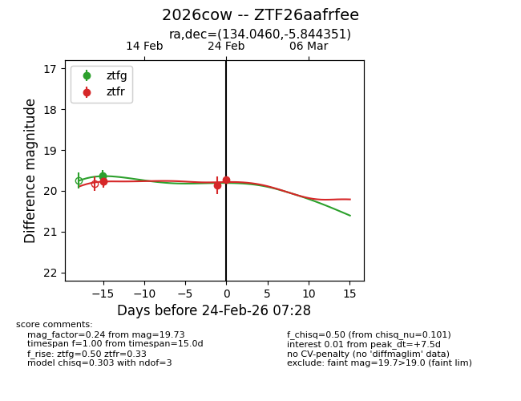
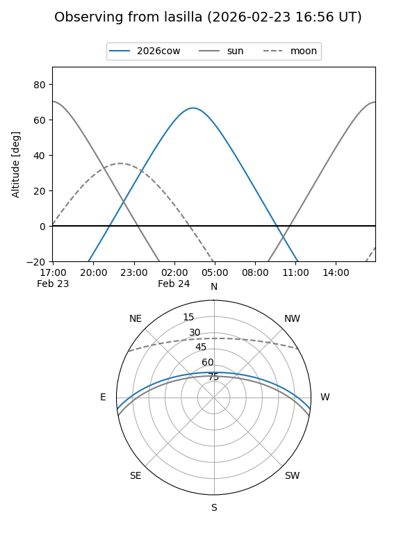
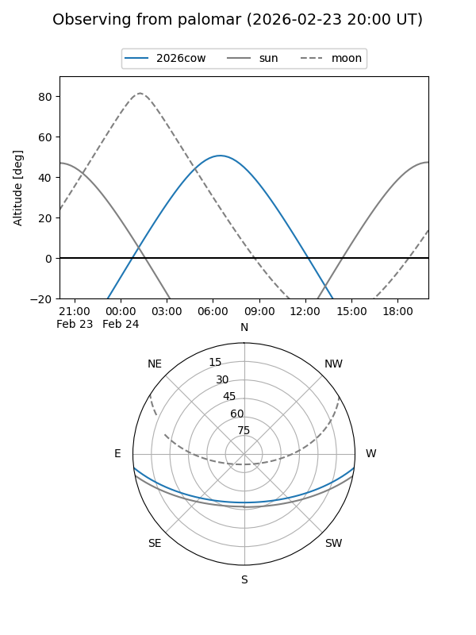

2026cow
Target 2026cow at 2026-02-24 09:08
Aliases and brokers:
FINK: link
Lasair: link
ALeRCE: link
TNS: link
YSE: link
alt names
ZTF26aafrfee (ztf,fink_ztf)
2026cow (tns,yse)
Coordinates:
equatorial (ra, dec) = 134.0460,-5.84435
equatorial (HMS+DMS) = 08:56:11.04,-05:50:39.66
galactic (l, b) = (233.8635,+24.33256)
Flags:
Photometry:
last ztfg=19.63, ztfr=19.73
1 ztfg, 4 ztfr detections
Lightcurve

Visibility


Additional plots